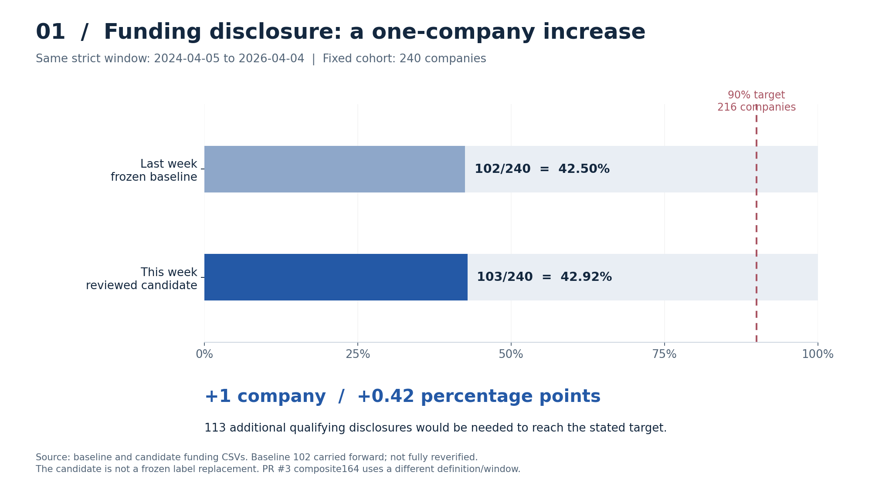
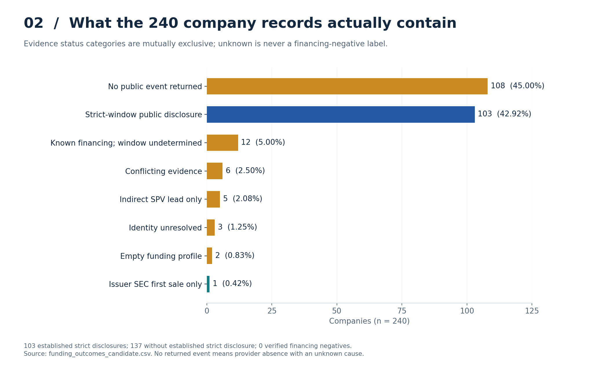
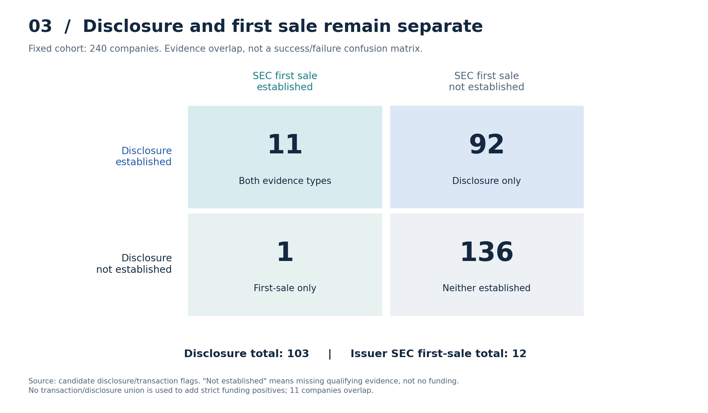
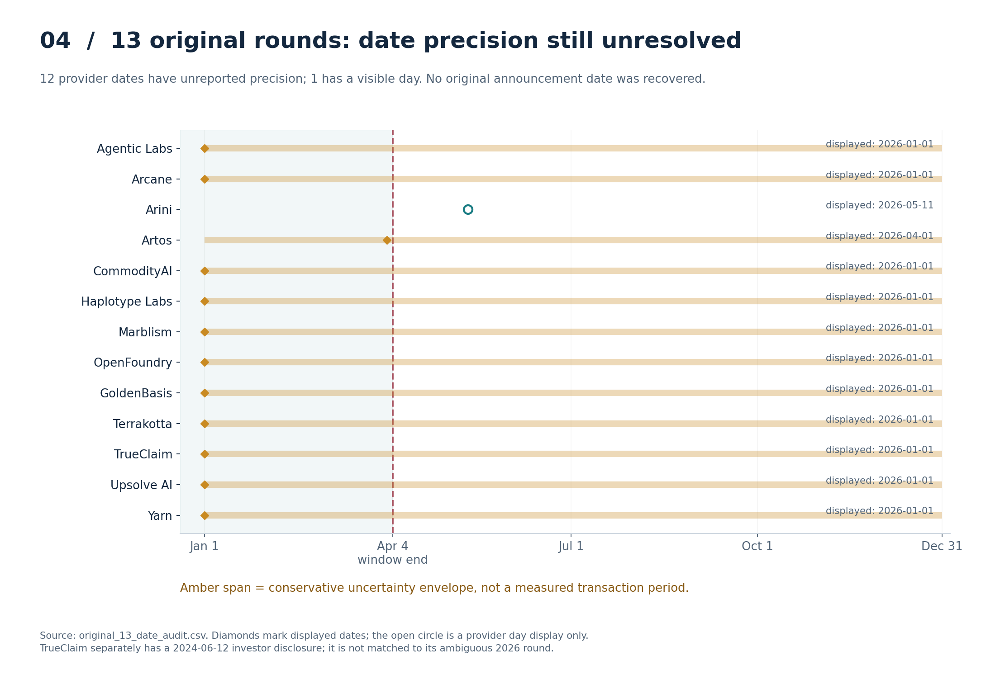
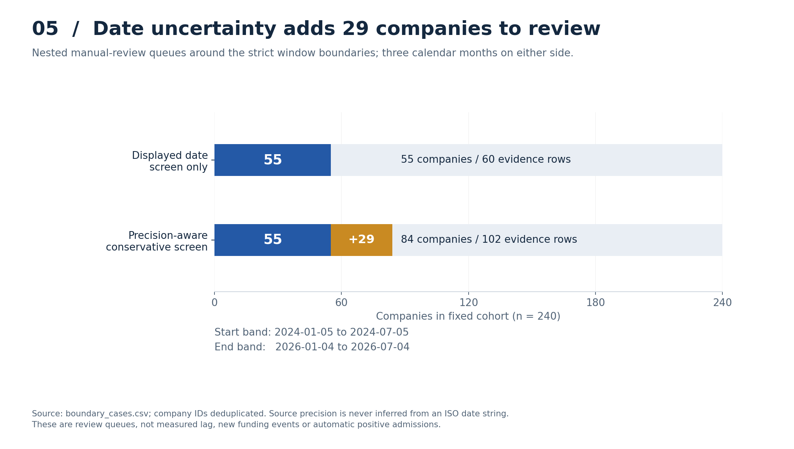
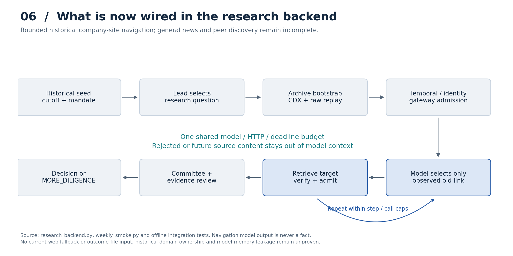
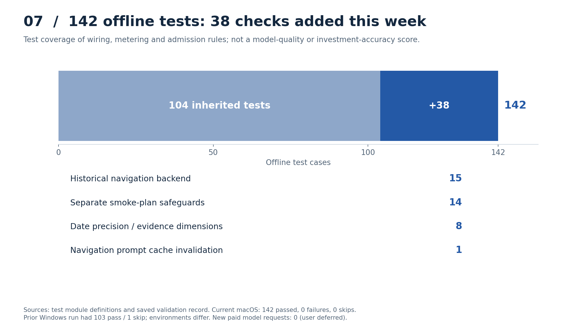

本週有工程交付，資料覆蓋只小幅增加
獨立投資人公告為 TrueClaim 增加一筆公司層級披露證據；原本 13 筆供應商輪次的公告日期仍全部未定。因此，本週應報「可核對的候選增量＋仍未完成的資料工作」，不能報已達 90%。

| 口徑 | 本週／參考數字 | 觀測窗口與解讀 |
|---|---|---|
| 嚴格公開披露 | 103 / 240 = 42.92% | 2024-04-05 至 2026-04-04；新候選，舊 102 家未全數重驗。 |
| SEC 發行人首次出售 | 12 家，與披露重疊 11 家 | 保留為獨立交易維度；不加進披露數。 |
| PR #3 綜合結果 | 164 / 240 = 68.33% | 153 筆融資觀測＋11 家額外狀態觀測；非 SEC 報道延至 2026-07-04。不同定義，不能畫成同一口徑的進步。 |
137 家未知，原因與後續工作並不相同
候選表保留原有缺口類型。沒有事件回傳只是供應商查詢結果；無法辨識公司、空白頁、SPV 線索、來源衝突及日期未定都需要不同處理。



資料可用性和標籤要分開
SEC 與公開披露的交叉表中，92 家只有披露證據、11 家兩者都有、1 家只有 SEC 首售證據，136 家兩個維度都未建立。
這不產生一個「104 家融資正例」的新標籤。嚴格披露候選仍是 103 家，交易欄位沒有改動。
上週文字的「117 家未回傳事件」無法從共享 CSV 精確重現；CSV 的該類別為 108 家。其餘未知另列，不能憑差額判斷事件有無。
完成逐筆檢查，仍沒有補出原公告精度
儲存的多數連結是供應商輪次頁，不是公司／投資人的原始公告。11 筆 2026-01-01 不能只因格式而當作 1 月 1 日；若只知道年份，可能日期區間仍跨過 2026-04-04。

| 決策時公司名稱 | 供應商日期 | 日期精度 | 本週查核結果 | 原輪次 |
|---|---|---|---|---|
| Agentic Labs | 2026-01-01 | 未報精度 | 官網有支持機構，無可核對公告日 | 未定 |
| Arcane | 2026-01-01 | 未報精度 | 原站無法讀取；同名公司不可合併 | 未定 |
| Arini | 2026-05-11 | 日（僅供應商顯示） | 供應商日落窗外；原始來源鎖定 | 未定 |
| Artos | 2026-04-01 | 未報精度 | 產品發布不是融資公告；原日未核實 | 未定 |
| CommodityAI | 2026-01-01 | 未報精度 | 已讀官網未見附日期融資公告 | 未定 |
| Haplotype Labs | 2026-01-01 | 未報精度 | SEC 首售 2024-03-29，該次在窗前 | 未定 |
| Marblism | 2026-01-01 | 未報精度 | 供應商日期遮蔽，新聞欄不構成公告 | 未定 |
| OpenFoundry | 2026-01-01 | 未報精度 | 名稱／轉型線索已留存，非融資日期 | 未定 |
| GoldenBasis | 2026-01-01 | 未報精度 | 更名線索保留，二手月份衝突未裁決 | 未定 |
| Terrakotta | 2026-01-01 | 未報精度 | YC 支持標記無融資日期 | 未定 |
| TrueClaim | 2026-01-01 | 未報精度 | 另有 2024-06-12 投資人披露；原輪次未定 | 未定 |
| Upsolve AI | 2026-01-01 | 未報精度 | 競賽獎金不能假設成股權融資 | 未定 |
| Yarn | 2026-01-01 | 未報精度 | 產品上線非融資；供應商日期互相衝突 | 未定 |
TrueClaim：可以增加的是披露維度
KAYA 投資人電子報日期為 2024-06-12，可建立嚴格窗內公司層級公開披露。它未證明成交日，也未證明與原 2026 年供應商輪次是同一事件；因此原輪次仍未定。
Haplotype：申報日不能替代首次出售日
SEC 發行人 Form D首次出售日為 2024-03-29，該筆在窗口前。這不代表公司之後沒有融資，也不能以較晚申報日把交易移進窗口。
三個月目前只作人工複核，不平移任何日期
| 來源／欄位 | 記錄的日期 | 本週採用規則 |
|---|---|---|
| SEC Date of First Sale | 首次投資人不可撤回的投資承諾 | 交易維度；不以申報日或 SPV 替代 |
| SEC filing date | 通知提交日期 | 與首次出售日期分開；不推定每筆都準時 |
| 公司／投資人公告 | 第一方公開披露日與精度 | 整段可能日期需在嚴格披露窗內 |
| 媒體／Crunchbase announced_on | 文章發布或供應商公告日期 | 不自動減三個月，也不當成成交日 |
| Crunchbase closed_on | 獨立的成交日期欄位，含精度 | 未成功取回的 API 欄位不能憑空補值 |
| Current profile／支持標記 | 目前頁面或累計脈絡 | 只作研究線索，不直接成立新輪次 |

複核帶為起點 2024-04-05 前後三個日曆月（2024-01-05 至 2024-07-05），以及終點 2026-04-04 前後三個日曆月（2026-01-04 至 2026-07-04）。以公司去重後，55 家顯示日期接近邊界；另有 29 家因精度不明而納入保守隊列。
84 家不是 84 筆新增正例，也不是已測得三個月延遲。仍缺足夠的同一輪次交易日／公告日配對，無法估計來源別延遲分布。
後端由 dispatch 進到受限研究迴圈
本週加入模型選路、歷史內容複核及共用預算；模型不能自行宣告證據已驗證，也無法從這條工具路徑讀取 Y、目前公司資料或任意搜尋片段。


本週可驗證的行為
- 未知／跨公司／截止日後來源不能流入 planner。
- 不存在或重複路徑會停止，不任意生成網址。
- 模型與 HTTP 共用上限；缺 usage、API 錯誤、錯誤 citation 會停止後續呼叫。
- 被拒絕的重跑不覆寫既有結果，prompt 改動會使 cache key 失效。
仍未建立的證據
- 通用新聞及同業探索、歷史網域所有權。
- 真實公司研究的正確率、投資報酬或預測準確率。
- 模型預訓練未含未來知識的完整保證。
- 新的實際模型執行；本週只有離線測試和零網路預檢。
Smoke test 已定義，但依使用者選擇不付費執行
選定 Adagy Robotics：從歷史名冊依字母排序、排除 Abel，讀入公司名稱與網域，不用後續融資結果挑選公司。資訊截止日為 2024-04-04 23:59:59 UTC，與先前 Abel pilot 分開。
達上限、來源不合格、無新證據、usage 不完整或驗證失敗即停；結果與 stop reason 保存。未來執行仍需新核准並核對模型費率及既有 API 設定。
下一週應交付的具體資料工作
- 先補原公告與精度：優先處理 13 筆原輪次，找不到就維持未定，不以目前官網或支持標記補成確定日期。
- 按來源逐案配對：從邊界隊列確認同一輪次的交易日／公告日，才討論來源別延遲或改觀測窗。
- 人工審查候選：確認 TrueClaim 披露增量與 PR #3 的定義差異；修正 PR #3 雜湊換行與中文舊總數，但不因此改標籤。
- 完成存取與執行前條件：Crunchbase 本次 current endpoint 回 401、legacy 回 404，沒有拿到日期精度；金鑰未儲存。付費 smoke test 保留待後續明確授權。